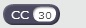
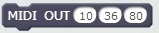
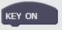
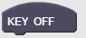
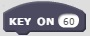
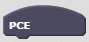
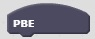
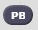
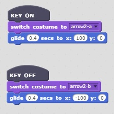
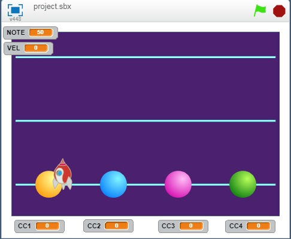

- Web MIDI API Working Draft http://webaudio.github.io/web-midi-api/
- W3C http://www.w3.org/
Do you know MIDI? MIDI is a protocol for connecting between MIDI Devices or a MIDI device to the PC. If you don't know, please see like a following page.
- MIDI wiki https://en.wikipedia.org/wiki/MIDI
- SUMMARY OF MIDI MESSAGES https://www.midi.org/specifications
There are six blocks in this extension.
- GET CC
- GET NOTE ON
- PUT MIDI
- KEY ON
- KEY OFF
- KEY ON with KEY NUMBER
- PROGRAM CHANGE
- PITCH BEND
- EVENT
The extension is here.
https%3A%2F%2Fmasahirokakishita.github.io%2FWebMIDI%2Fwebmidiext.js
or
https://masahirokakishita.github.io/WebMIDI/webmidiext.js
GET CC "GET CC" is consisted of a hat block and a synchronous reporter. The hat block informs a MIDI CC data comes. And the synchronous reporter  has one parameter. It's a MIDI control change number. The reporter gets the CC value of the CC number defined by the parameter.
GET NOTE ON "GET NOTE ON" is consisted of a hat block and two synchronous reporters. The hat block informs a MIDI NOTE ON message. NOTE ON message is included two statuses, 0x80 and 0x90. One synchronous reporter indicates the note number and the other indicates the velocity. The case of status 0x80, the velocity is set to zero.
PUT MIDI "PUT MIDI"  genarates a MIDI NOTE ON message. The first parameter is a channel number, the second one is a note number and last one is a velocity. Normary the velocity is zero means note off.
KEY ON "KEY ON"  is a hat block that indicates when a keyboad is pushed.
KEY OFF "KEY OFF"  is a hat block that indicates when a keyboad is released.
KEY ON with KEY NUMBER "KEY ON with KEY NUMBER"  is a hat block that indicates when a keyboad defined in numeric box is pushed.
PROGRAM CHANGE
"PCE"  is a hat block that indicates when a Program Change message is recieved.
And the reporter block "PC" indicates a program change number.
PITCH BEND
"PBE"  is a hat block that indicates when a Pitch Bend message is recieved.
And the reporter block "PB"  indicates a pitch bend value as 7bit.
EVENT
Boolean reporter "EVENT"
 indicates when an MIDI event occurs.
indicates when an MIDI event occurs.You can select which an event you want.
- 'key on' --- key on event
- 'key off' --- key off event
- 'cc-chg' --- control change event
- 'p-bend' --- pitchbend event
- 'pg-chg' --- program change event
This is an example using this extension.
In this movie's case, when a key on the keyboard is hit a small rocket moves to a position defined by key number and velocity.
Example 1 This example is for separationg Note Off from Note On. Note Off can be found by the velocity is zero.

The Example is here.
Example 2 This Example is using "KEY ON" and "KEY OFF" hats.

The Example is here.
Example 4

The Example is here.